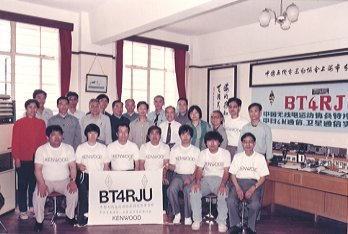
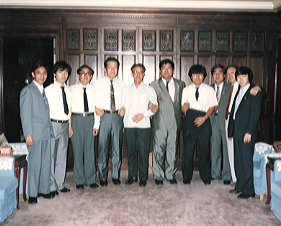
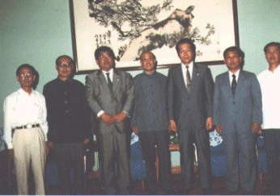
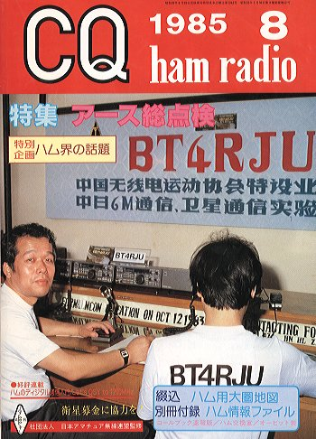

中国の北京・上海から6mとサテライト運用
Beijing & Shanghai China

中国から6mとサテライトを運用。BT1HHL(左)、BT4RJU(右)
|
1985年6月、JARL第5次訪中団(団長・JA1RJU 小笠原一夫)による中国からの6mとサテライトの運用が行なわれました。 この運用は、6月14～15日の北京市(BT1HHL)、16～17日は上海市(BT4RJU)からと2つの特別コールサインを使い行われました。 期間中、FBなコンデションにも恵まれ、またJARL訪中団として初めての1.9MHz、50MHzの運用とあって多くの注目を集め、 訪中は大成功でした。 中国では、各地で大歓迎を受け、制約あるスケジュールの中、50MHzにおいては約3,000(北京=約1,000、上海=約2,000)QSOと、 少ない時間の中で大きな成果を上げました。 さらに、中国から初のコンテストにも参加(JARL主催：オール・アジアDXコンテスト)しました。 また、AO－10による衛星通信も行い中国のハム活動に幅を待った運用が加えられました。 北京では、中国清華大学アマチュア無線局BY1QH、北京宜武区青少年アマチュア無線局BY1SKほか、 一般からの参加者約20数人を集め、中国無線電運動協会(CRSA)のBY1PKにおいて電波伝搬や衛星通信についての講習会が、 JA1RJU(小笠原)とJR1HHL(鈴木)が講師となって行われました。 この講習会はCRSAの上海同支部・BY4AAでも行なわれました。 今回が初の運用となる1.9MHz帯は、北京、上海ともに満足なアンテナの設置が出来なかったものの、 念願のJAとのQSOに成功しました。 14日の北京滞在中には、去る5月26日に他界された中国無線電運動協会の主席劉寅氏に黙とうをささげ、 その御遺族の夫人とご子息さんにJARLを代表して弔慰を表しました。
 BY4AAのメンバーと記念撮影
【原 昌三・JARL会長から託されたメッセージ】
このたび、私共日本アマチュア無線連盟より、小笠原一夫氏を団長とする6名の訪中団が貴国を訪問し、
無線電運動を通して、両国の友好親善を深めることができますことを、心より喜んでおります。
  中国での歓迎パーティー上海(左)、北京(右)

【JARL第5次訪中団行動表】 |